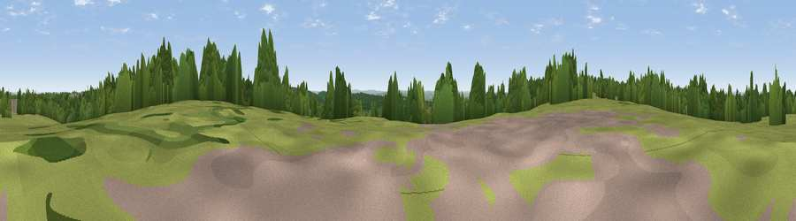

Viewpoint near Tatsfield
#17655 in England · top 10% of its area beats it · near TatsfieldThe view, rendered

A 360° render of this exact spot computed from the terrain model, tree cover and land cover — summer colours, afternoon light, calibrated against photographs of famous viewpoints. Real trees, hedges and buildings will differ in detail.
The panorama
Grey silhouette: terrain skyline in each direction (720 bearings, Earth curvature and refraction included). Dashed green: skyline with trees (+15 m) and buildings (+8 m) as obstacles. Blue strip: how far the ground is visible on each bearing.
Where the view opens
Wedge length = distance to the farthest visible ground on that bearing (vegetation-aware). Rings at 10, 25 and 50 km.
What fills the view
50% woodland · 38% grassland · 6% cropland · 6% built-up
Angular shares of the visible panorama (visual magnitude), not map area. Landscape diversity 0.47 (0–1 Shannon).
Key numbers
More beautiful places nearby
The staircase of upgrades: each row has a higher view potential than everything closer. Driving times are estimates from straight-line distance, calibrated against real road routing — check an actual route before setting out.
| Place | Direction | Drive | Score |
|---|---|---|---|
| Betsom's Hill | E · 1 km | ~4 min | 57.9 |
| Viewpoint near Tatsfield | WSW · 2 km | ~4 min | 61.0 |
| Viewpoint near Limpsfield | WSW · 3 km | ~7 min | 62.7 |
| Viewpoint near Limpsfield | WSW · 3 km | ~8 min | 66.0 |
| Viewpoint near Ide Hill | SE · 8 km | ~17 min | 67.9 |
| Viewpoint near Caterham Valley | WSW · 10 km | ~19 min | 68.0 |
| Viewpoint near Shipbourne | ESE · 15 km | ~27 min | 69.1 |
| Box Hill | W · 22 km | ~37 min | 70.4 |
51.28788, 0.03674 · source: screening · position refined by local search. Computed location — check access rights before visiting.